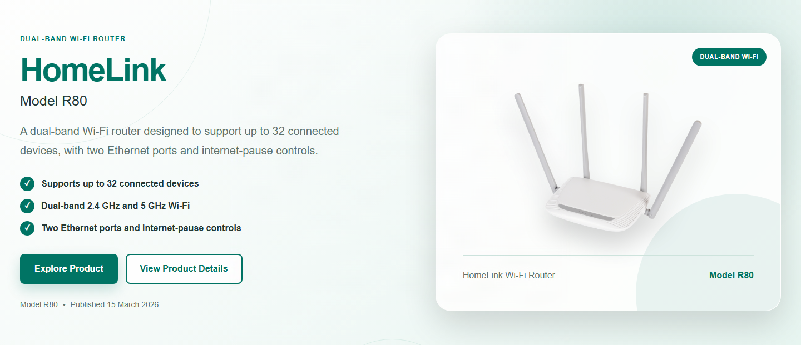

Supports up to 32 devices
HomeLink R80 can manage wireless and wired connections for up to 32 devices on the home network.

Credentials applied with: Adobe Content Authenticity
Asset type: PNG image with embedded Content Credentials
Credential location: Embedded in the asset file
Last verification: Passed on 19/11/2026 using Content Credentials Verify
Verify Content CredentialsCredentials applied with: Adobe Content Authenticity
Asset type: PNG image with embedded Content Credentials
Credential location: Embedded in the asset file
Last verification: Passed on 19/11/2026 using Content Credentials Verify
Verify Content CredentialsDesigned for connected homes
ClearSpan HomeLink R80 is a dual-band Wi-Fi router designed to support up to 32 connected devices.
The router provides separate 2.4 GHz and 5 GHz wireless bands, two Gigabit Ethernet ports and a combined wireless speed of up to 1.2 Gbps.
The network-control interface provides an internet-pause function. Wireless connections use WPA2 security, and a separate guest network is not supported.
Product highlights
HomeLink R80 combines dual-band Wi-Fi, wired connectivity, internet-pause controls and support for up to 32 devices.
HomeLink R80 can manage wireless and wired connections for up to 32 devices on the home network.
Separate 2.4 GHz and 5 GHz bands support a range of everyday devices and network activities.
Two Gigabit Ethernet ports provide wired connections for compatible computers, televisions and other devices.
Pause internet access for connected devices through the network-control interface.
WPA2 wireless security protects compatible devices and network credentials.

Designed for home networks
Connect HomeLink R80 to a compatible modem or internet terminal, configure the wireless network and add devices using Wi-Fi or Ethernet.
Connect compatible devices to either the 2.4 GHz or 5 GHz network.
Use the two Gigabit Ethernet ports for compatible wired devices.
Review connected devices and pause internet access when required.
Key product information
HomeLink R80 is designed to manage a maximum of 32 connected devices across its wireless bands and Ethernet connections.
Product details
Network and hardware information for ClearSpan HomeLink R80.

| Product name | HomeLink |
|---|---|
| Model | R80 |
| Product category | Dual-band Wi-Fi router |
| Maximum connected devices | 32 devices |
| Wireless bands | 2.4 GHz and 5 GHz |
| Maximum combined speed | 1.2 Gbps |
| Ethernet ports | 2 Gigabit Ethernet ports |
| Wireless security | WPA2 |
| Parental controls | Internet pause only |
| Guest network | Not supported |
| Power input | 9 V DC, 1.0 A |
| Country of manufacture | France |
| Product code | CS-R80-2026 |
Setup guidance
Follow these steps when installing and configuring the router.
Place the router in an open, central location away from enclosed cabinets and major sources of interference.
Connect the modem or internet terminal to the router's WAN port using an Ethernet cable.
Follow the setup interface to create the network name, password and administrator credentials.
Connect compatible devices using Wi-Fi or one of the two Gigabit Ethernet ports.
Important information
Follow these precautions when installing and operating HomeLink R80.
HomeLink R80 requires an active internet service and a compatible modem or network terminal. Actual speed depends on the service, connected devices and installation environment.
Questions and Answers
Find answers about HomeLink R80, including device capacity, wireless bands, Ethernet connections, security and network controls.
HomeLink R80 supports up to 32 connected devices.
The router supports 2.4 GHz and 5 GHz Wi-Fi.
HomeLink R80 provides two Gigabit Ethernet ports.
The maximum stated combined wireless speed is 1.2 Gbps.
HomeLink R80 supports WPA2 wireless security.
The network-control interface provides an internet-pause function.
No. A separate guest network is not supported.
HomeLink R80 is manufactured in France.